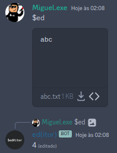

ed(itor) manual
Examples
Note: you or any other person is represented with a '>' symbol
And bot is represented with a '<' symbol.
Simple examples:
1. Creating and editing a blank file.
> $ed filename
< ✅
2. Editing an already existing file.
> $ed [insert attachment]
< (size of attachment in bytes)

3. Appending data:
> a
Hello World!
Goodbye, World!
.
< (nothing)
4. Deleting lines:
> 2,3d
< (nothing)
5. Write (upload the whole file) and quit.
> wq
< (size of the new edited file in bytes) [attachment]
Advanced examples:
1. Creating a file named "sample.txt", with the contents of "Hello World!" and then quit.
> $ed sample.txt
< ✅
> a
"Hello World!"
.
wq
< 13 [attachment]

2. Find a line including "Hello" on them
> $ed [attachment]
< 200
> g/Hello/p
< [query result attachment]
> q
< ✅

3. Replaces all lines that includes "Hello" to "Goodbye,"
> $ed [attachment]
< 200
> r/Hello/Goodbye,
< (last replaced line which is) Goodbye, Discord!
> wq
< (the new edited attachment size which is) 212 [edited attachment]